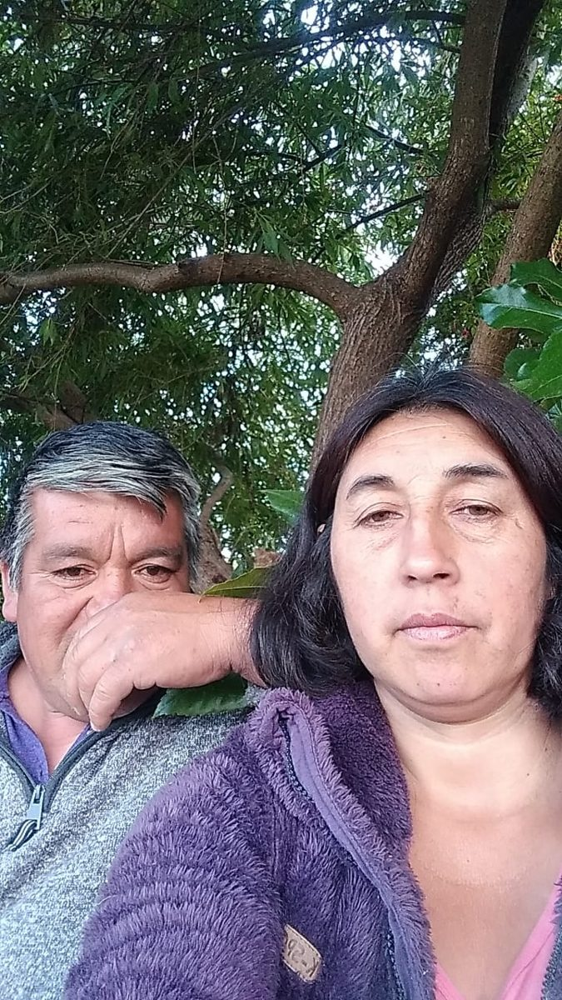
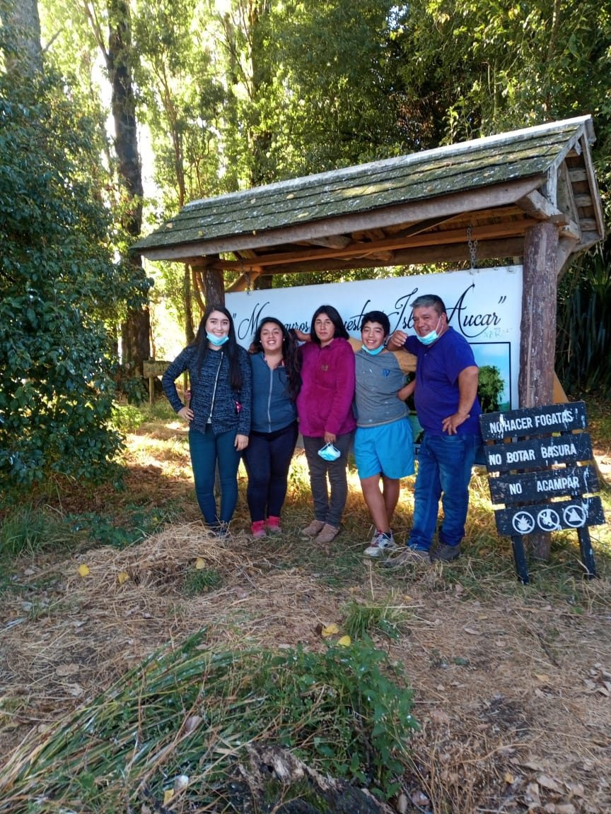
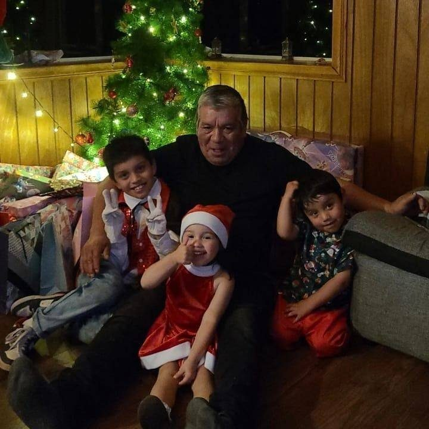

Su familia
Laura Navarrete
Su esposa, a quien llamaba con cariño “su Mercedes”. Juntos formaron una familia durante 31 años.
Camila, Mackarena y Maikol
Les dio estudios a los tres. Camila y Mackarena, las dos mayores, ya tienen profesión y casa propia, y Maikol, el menor, está a punto de titularse de técnico en el liceo y estudia Ingeniería en Mecánica Automotriz en Puerto Montt. También quería a sus yernos.


Dylan
Nieto, hijo de Camila
Benjamín
Nieto, hijo de Camila
Isabella
Nieta, hija de Mackarena
Jaimir
Nieto adoptivo
Eran su alegría. Prefería quedarse de niñero antes que ir a la carpintería.

Barbara
Elsita
Bryan
Pablito
Sus cuatro ahijados, igual que sus sobrinos y sobrinas, estuvieron en su mente y corazón hasta el final.